Changes in PRIMAP-hist v2.5.1_final compared to v2.5_final for Georgia
2024-02-29
Johannes Gütschow
Change analysis for Georgia for PRIMAP-hist v2.5.1_final compared to v2.5_final
Overview over emissions by sector and gas
The following figures show the aggregate national total emissions excluding LULUCF AR6GWP100 for the country reported priority scenario. The dotted linesshow the v2.5_final data.
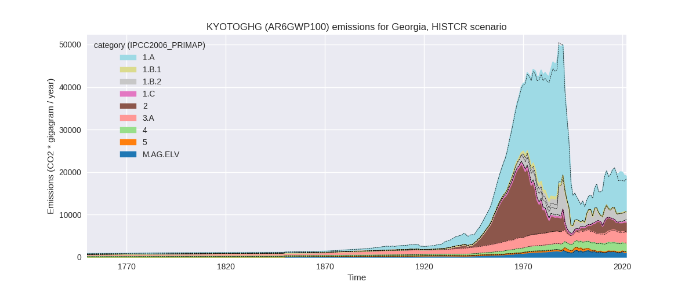
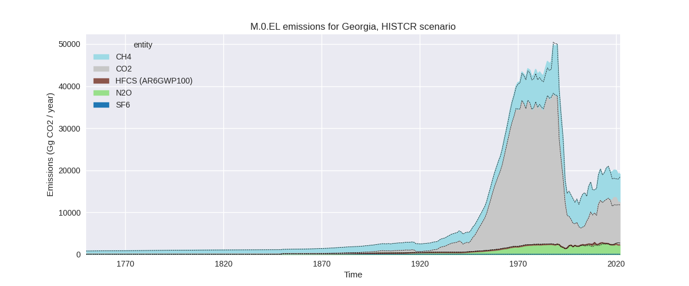
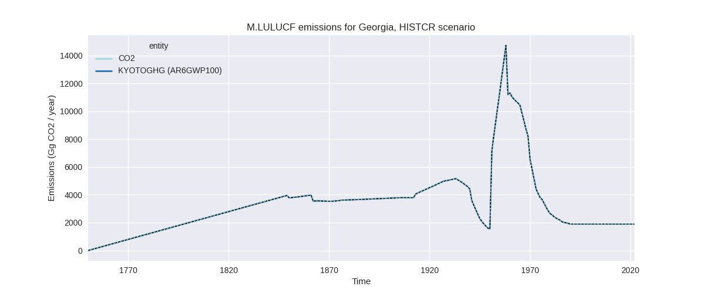
The following figures show the aggregate national total emissions excluding LULUCF AR6GWP100 for the third party priority scenario. The dotted linesshow the v2.5_final data.
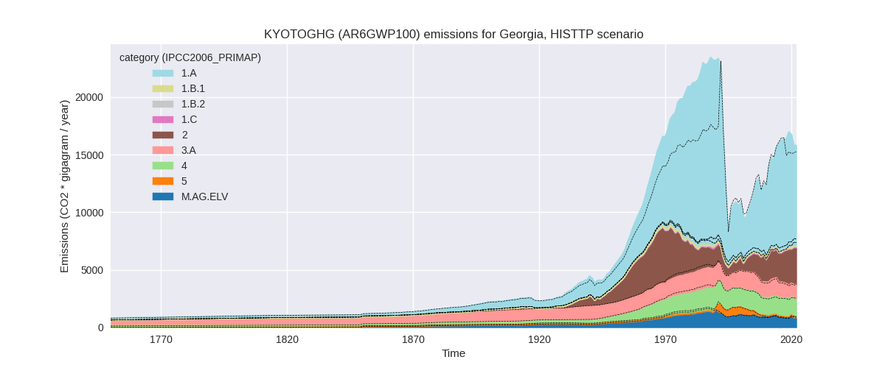
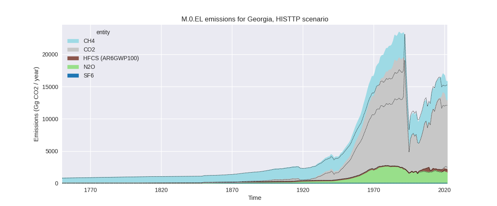
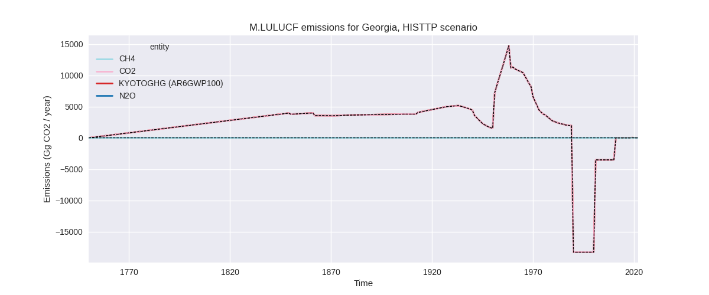
Overview over changes
In the country reported priority scenario we have the following changes for aggregate Kyoto GHG and national total emissions excluding LULUCF (M.0.EL):
- Emissions in 2022 have changed by 4.3%% (787.98 Gg CO2 / year)
- Emissions in 1990-2022 have changed by 0.5%% (95.90 Gg CO2 / year)
In the third party priority scenario we have the following changes for aggregate Kyoto GHG and national total emissions excluding LULUCF (M.0.EL):
- Emissions in 2022 have changed by 3.6%% (547.75 Gg CO2 / year)
- Emissions in 1990-2022 have changed by 1.9%% (260.24 Gg CO2 / year)
Most important changes per scenario and time frame
In the country reported priority scenario the following sector-gas combinations have the highest absolute impact on national total KyotoGHG (AR6GWP100) emissions in 2022 (top 5):
- 1: 1.A, CO2 with 1034.65 Gg CO2 / year (14.1%)
- 2: 1.B.2, CH4 with 389.98 Gg CO2 / year (20.7%)
- 3: M.AG.ELV, N2O with -216.41 Gg CO2 / year (-17.7%)
- 4: 2, N2O with -193.75 Gg CO2 / year (-19.9%)
- 5: 3.A, CH4 with -125.21 Gg CO2 / year (-5.1%)
In the country reported priority scenario the following sector-gas combinations have the highest absolute impact on national total KyotoGHG (AR6GWP100) emissions in 1990-2022 (top 5):
- 1: 1.A, CO2 with 222.51 Gg CO2 / year (2.8%)
- 2: 2, CO2 with -141.73 Gg CO2 / year (-10.1%)
- 3: 1.B.2, CH4 with 45.49 Gg CO2 / year (1.7%)
- 4: 2, N2O with -26.86 Gg CO2 / year (-5.0%)
- 5: M.AG.ELV, N2O with -14.42 Gg CO2 / year (-1.2%)
In the third party priority scenario the following sector-gas combinations have the highest absolute impact on national total KyotoGHG (AR6GWP100) emissions in 2022 (top 5):
- 1: 1.A, CO2 with 1269.67 Gg CO2 / year (17.2%)
- 2: 2, CO2 with -261.64 Gg CO2 / year (-11.9%)
- 3: 1.B.2, CH4 with -234.34 Gg CO2 / year (-73.1%)
- 4: 2, N2O with -141.82 Gg CO2 / year (-15.4%)
- 5: M.AG.ELV, N2O with -123.25 Gg CO2 / year (-14.7%)
In the third party priority scenario the following sector-gas combinations have the highest absolute impact on national total KyotoGHG (AR6GWP100) emissions in 1990-2022 (top 5):
- 1: 1.A, CO2 with 676.31 Gg CO2 / year (10.3%)
- 2: 1.B.2, CH4 with -236.81 Gg CO2 / year (-74.4%)
- 3: 2, CO2 with -147.81 Gg CO2 / year (-12.8%)
- 4: 2, N2O with -25.20 Gg CO2 / year (-3.7%)
- 5: M.AG.ELV, N2O with -15.26 Gg CO2 / year (-1.6%)
Notes on data changes
Here we list notes explaining important emissions changes for the country. ’' means that the following text only applies to the TP time series, while means that it only applies to the CR scenario. Otherwise the note applies to both scenarios.
- 1.A, CO2: A change in downscaling of CDIAC data for the former Soviet Union to it’s member states has raised pre-1990 emissions. The shares are now calculated based on the shares in the first year with data for the individual states instead of a multi year average. This is more realistic as the rapid emissions decline after 1990 differs by country.
Changes by sector and gas
For each scenario and time frame the changes are displayed for all individual sectors and all individual gases. In the sector plot we use aggregate Kyoto GHGs in AR6GWP100. In the gas plot we usenational total emissions without LULUCF. ## country reported scenario
2022
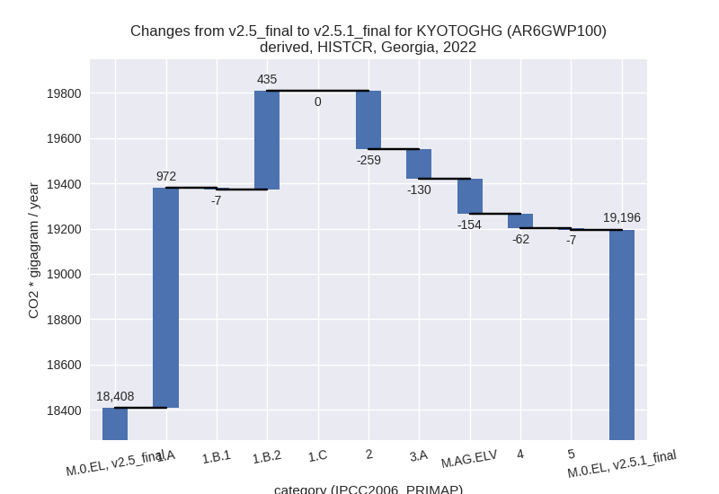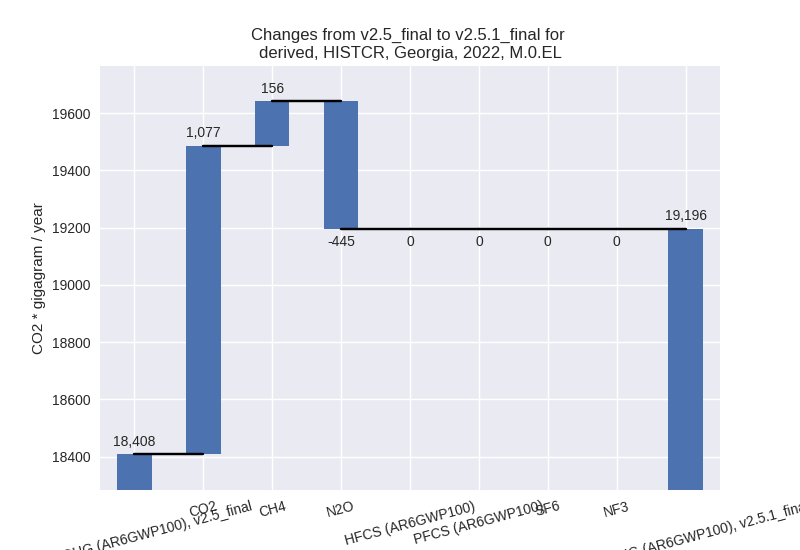
1990-2022
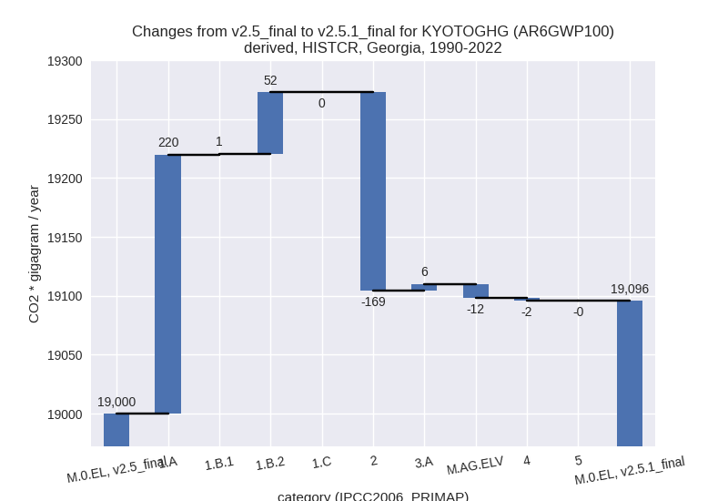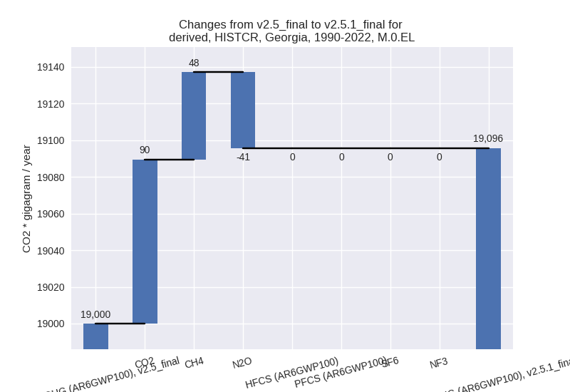
third party scenario
2022
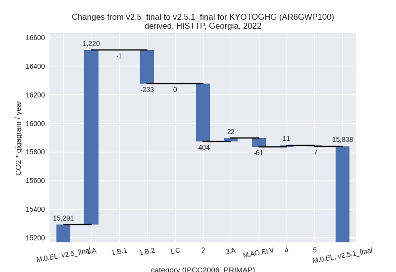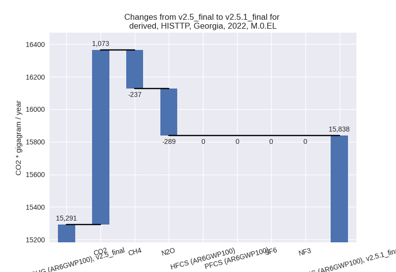
1990-2022
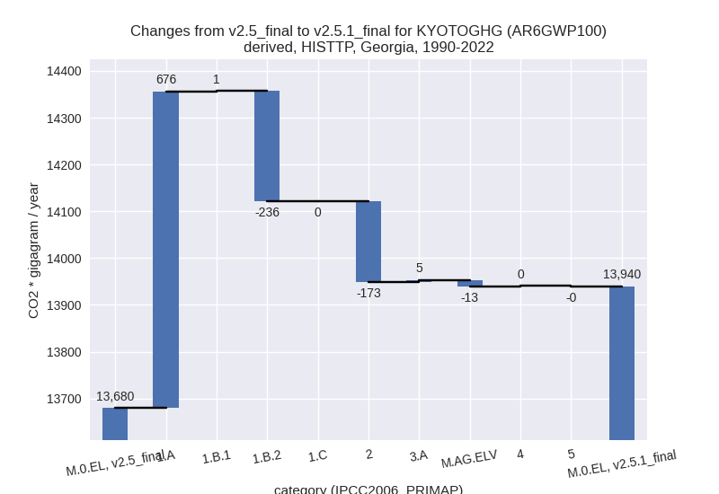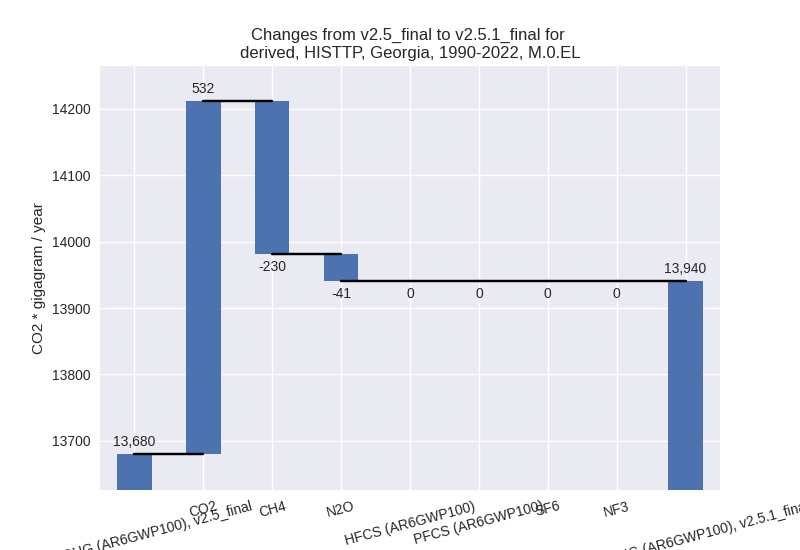
Detailed changes for the scenarios:
country reported scenario (HISTCR):
Most important changes per time frame
For 2022 the following sector-gas combinations have the highest absolute impact on national total KyotoGHG (AR6GWP100) emissions in 2022 (top 5):
- 1: 1.A, CO2 with 1034.65 Gg CO2 / year (14.1%)
- 2: 1.B.2, CH4 with 389.98 Gg CO2 / year (20.7%)
- 3: M.AG.ELV, N2O with -216.41 Gg CO2 / year (-17.7%)
- 4: 2, N2O with -193.75 Gg CO2 / year (-19.9%)
- 5: 3.A, CH4 with -125.21 Gg CO2 / year (-5.1%)
For 1990-2022 the following sector-gas combinations have the highest absolute impact on national total KyotoGHG (AR6GWP100) emissions in 1990-2022 (top 5):
- 1: 1.A, CO2 with 222.51 Gg CO2 / year (2.8%)
- 2: 2, CO2 with -141.73 Gg CO2 / year (-10.1%)
- 3: 1.B.2, CH4 with 45.49 Gg CO2 / year (1.7%)
- 4: 2, N2O with -26.86 Gg CO2 / year (-5.0%)
- 5: M.AG.ELV, N2O with -14.42 Gg CO2 / year (-1.2%)
Changes in the main sectors for aggregate KyotoGHG (AR6GWP100) are
- 1: Total sectoral emissions in 2022 are 10927.61 Gg
CO2 / year which is 56.9% of M.0.EL emissions. 2022 Emissions have
changed by 14.7% (1399.67 Gg CO2 /
year). 1990-2022 Emissions have changed by 2.5% (272.85 Gg CO2 / year). For 2022 the
changes per gas
are:

For 1990-2022 the changes per gas are:
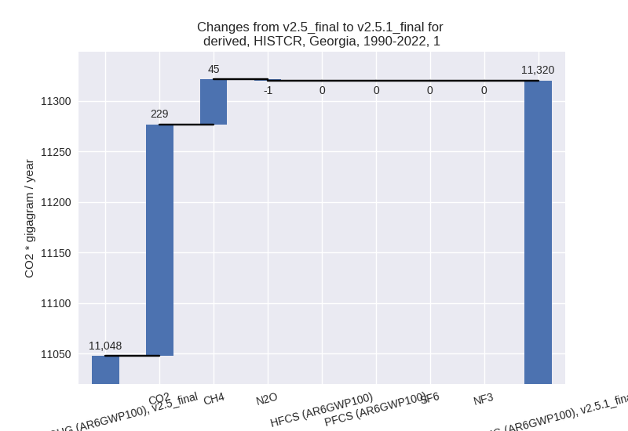
The changes come from the following subsectors:- 1.A: Total sectoral emissions in 2022 are 8525.73
Gg CO2 / year which is 78.0% of category 1 emissions. 2022 Emissions
have changed by 12.9% (972.08 Gg CO2
/ year). 1990-2022 Emissions have changed by 2.7% (219.94 Gg CO2 / year). For 2022 the
changes per gas
are:
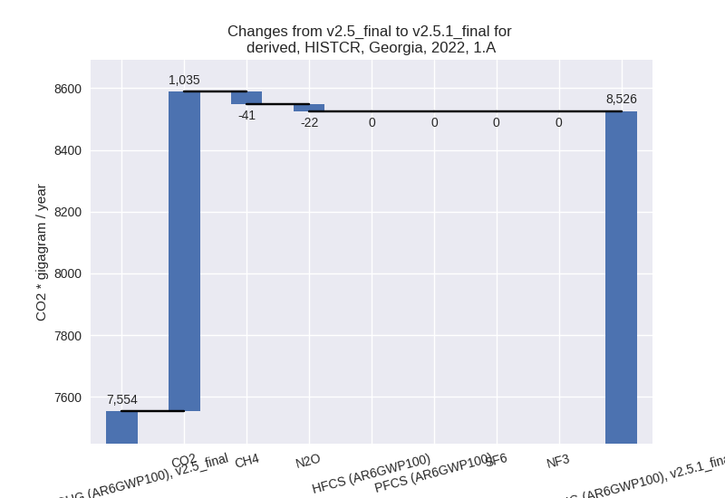
For 1990-2022 the changes per gas are:
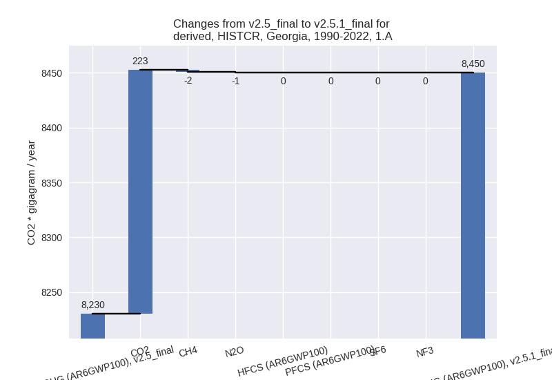
There is no subsector information available in PRIMAP-hist. - 1.B.1: Total sectoral emissions in 2022 are 77.85
Gg CO2 / year which is 0.7% of category 1 emissions. 2022 Emissions have
changed by -8.2% (-6.99 Gg CO2 /
year). 1990-2022 Emissions have changed by 0.8% (0.89 Gg CO2 / year). For 2022 the
changes per gas
are:
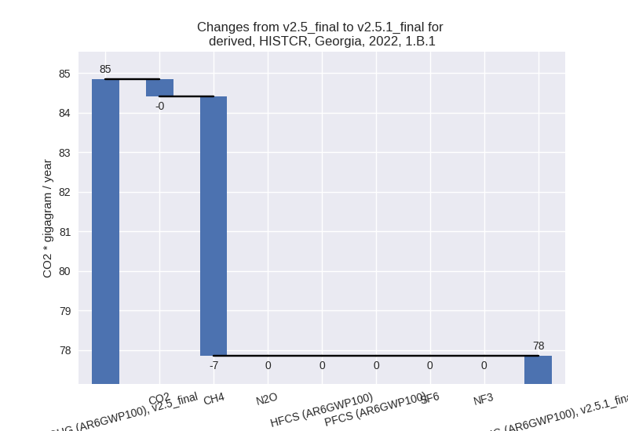
There is no subsector information available in PRIMAP-hist. - 1.B.2: Total sectoral emissions in 2022 are 2324.03
Gg CO2 / year which is 21.3% of category 1 emissions. 2022 Emissions
have changed by 23.0% (434.57 Gg CO2
/ year). 1990-2022 Emissions have changed by 1.9% (52.01 Gg CO2 / year). For 2022 the
changes per gas
are:
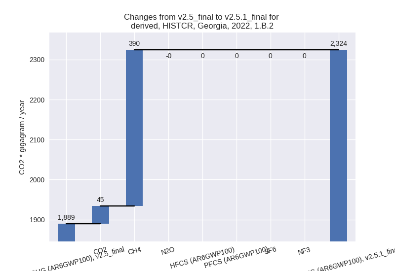
There is no subsector information available in PRIMAP-hist.
- 1.A: Total sectoral emissions in 2022 are 8525.73
Gg CO2 / year which is 78.0% of category 1 emissions. 2022 Emissions
have changed by 12.9% (972.08 Gg CO2
/ year). 1990-2022 Emissions have changed by 2.7% (219.94 Gg CO2 / year). For 2022 the
changes per gas
are:
- 2: Total sectoral emissions in 2022 are 2424.97 Gg
CO2 / year which is 12.6% of M.0.EL emissions. 2022 Emissions have
changed by -9.6% (-258.57 Gg CO2 /
year). 1990-2022 Emissions have changed by -8.1% (-168.59 Gg CO2 / year). For 2022
the changes per gas
are:
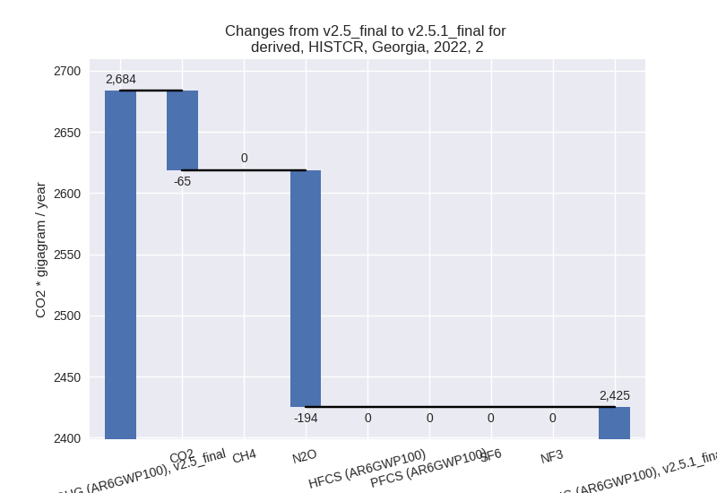
For 1990-2022 the changes per gas are:
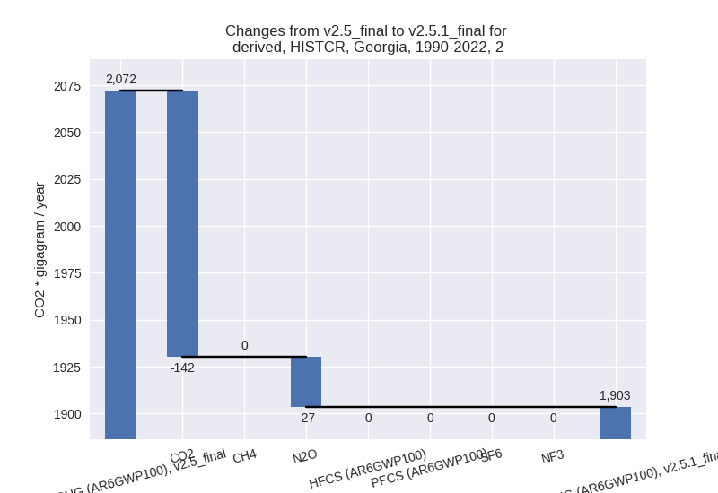 - M.AG: Total sectoral emissions in 2022 are 3782.97
Gg CO2 / year which is 19.7% of M.0.EL emissions. 2022 Emissions have
changed by -7.0% (-283.87 Gg CO2 /
year). 1990-2022 Emissions have changed by -0.2% (-6.25 Gg CO2 / year). For 2022 the
changes per gas
are:
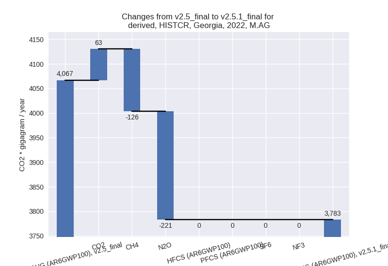
The changes come from the following subsectors:- 3.A: Total sectoral emissions in 2022 are 2671.84
Gg CO2 / year which is 70.6% of category M.AG emissions. 2022 Emissions
have changed by -4.6% (-129.76 Gg
CO2 / year). 1990-2022 Emissions have changed by 0.2% (6.06 Gg CO2 / year). For 2022 the
changes per gas
are:

There is no subsector information available in PRIMAP-hist. - M.AG.ELV: Total sectoral emissions in 2022 are
1111.14 Gg CO2 / year which is 29.4% of category M.AG emissions. 2022
Emissions have changed by -12.2%
(-154.11 Gg CO2 / year). 1990-2022 Emissions have changed by -1.0% (-12.31 Gg CO2 / year). For 2022 the
changes per gas
are:
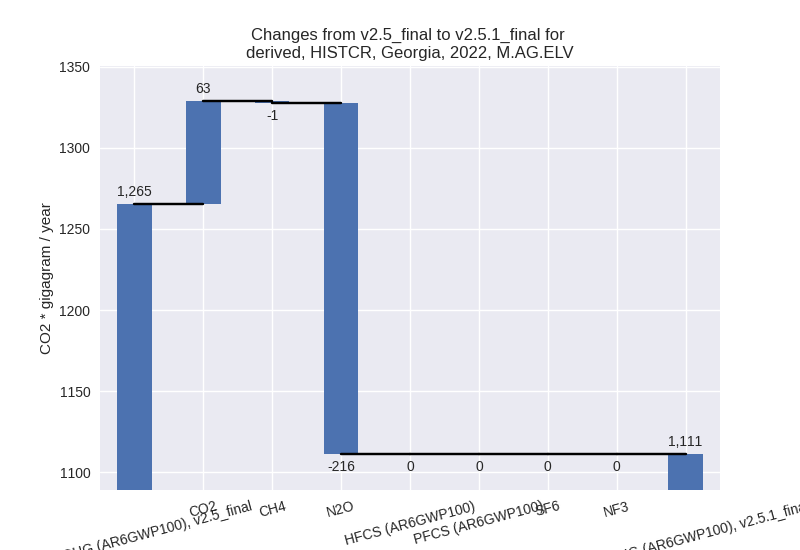
There is no subsector information available in PRIMAP-hist.
- 3.A: Total sectoral emissions in 2022 are 2671.84
Gg CO2 / year which is 70.6% of category M.AG emissions. 2022 Emissions
have changed by -4.6% (-129.76 Gg
CO2 / year). 1990-2022 Emissions have changed by 0.2% (6.06 Gg CO2 / year). For 2022 the
changes per gas
are:
- 4: Total sectoral emissions in 2022 are 1997.37 Gg
CO2 / year which is 10.4% of M.0.EL emissions. 2022 Emissions have
changed by -3.0% (-61.95 Gg CO2 /
year). 1990-2022 Emissions have changed by -0.1% (-1.88 Gg CO2 / year). For 2022 the
changes per gas
are:
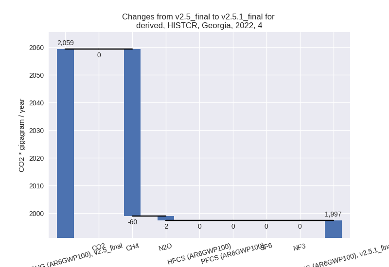 - 5: Total sectoral emissions in 2022 are 63.24 Gg
CO2 / year which is 0.3% of M.0.EL emissions. 2022 Emissions have
changed by -10.3% (-7.30 Gg CO2 /
year). 1990-2022 Emissions have changed by -0.1% (-0.22 Gg CO2 / year). For 2022 the
changes per gas
are:
third party scenario (HISTTP):
Most important changes per time frame
For 2022 the following sector-gas combinations have the highest absolute impact on national total KyotoGHG (AR6GWP100) emissions in 2022 (top 5):
- 1: 1.A, CO2 with 1269.67 Gg CO2 / year (17.2%)
- 2: 2, CO2 with -261.64 Gg CO2 / year (-11.9%)
- 3: 1.B.2, CH4 with -234.34 Gg CO2 / year (-73.1%)
- 4: 2, N2O with -141.82 Gg CO2 / year (-15.4%)
- 5: M.AG.ELV, N2O with -123.25 Gg CO2 / year (-14.7%)
For 1990-2022 the following sector-gas combinations have the highest absolute impact on national total KyotoGHG (AR6GWP100) emissions in 1990-2022 (top 5):
- 1: 1.A, CO2 with 676.31 Gg CO2 / year (10.3%)
- 2: 1.B.2, CH4 with -236.81 Gg CO2 / year (-74.4%)
- 3: 2, CO2 with -147.81 Gg CO2 / year (-12.8%)
- 4: 2, N2O with -25.20 Gg CO2 / year (-3.7%)
- 5: M.AG.ELV, N2O with -15.26 Gg CO2 / year (-1.6%)
Changes in the main sectors for aggregate KyotoGHG (AR6GWP100) are
- 1: Total sectoral emissions in 2022 are 8901.91 Gg
CO2 / year which is 56.2% of M.0.EL emissions. 2022 Emissions have
changed by 12.5% (987.20 Gg CO2 /
year). 1990-2022 Emissions have changed by 6.2% (441.23 Gg CO2 / year). For 2022 the
changes per gas
are:
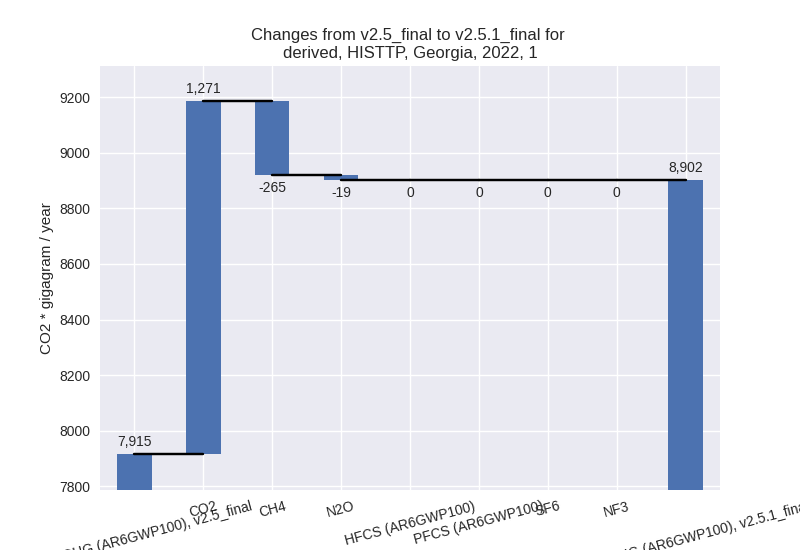
For 1990-2022 the changes per gas are:
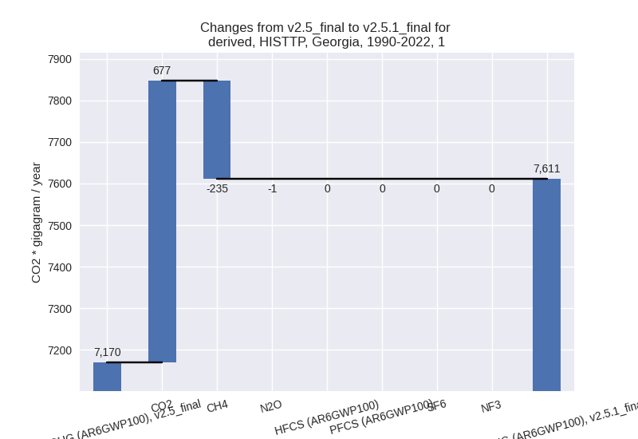
The changes come from the following subsectors:- 1.A: Total sectoral emissions in 2022 are 8807.91
Gg CO2 / year which is 98.9% of category 1 emissions. 2022 Emissions
have changed by 16.1% (1220.33 Gg
CO2 / year). 1990-2022 Emissions have changed by 9.9% (675.90 Gg CO2 / year). For 2022 the
changes per gas
are:
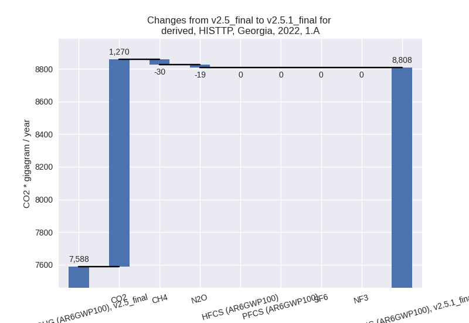
For 1990-2022 the changes per gas are:
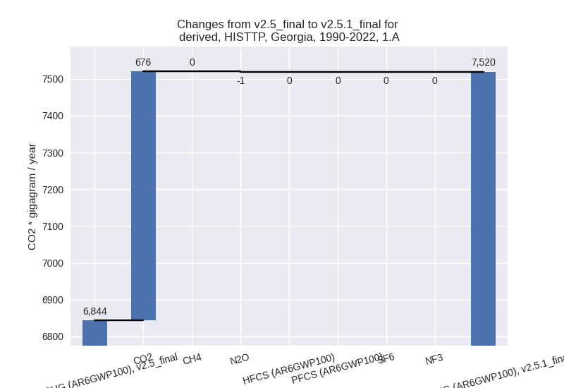
There is no subsector information available in PRIMAP-hist. - 1.B.1: Total sectoral emissions in 2022 are 5.97 Gg
CO2 / year which is 0.1% of category 1 emissions. 2022 Emissions have
changed by -9.3% (-0.61 Gg CO2 /
year). 1990-2022 Emissions have changed by 20.7% (1.29 Gg CO2 / year). For 2022 the
changes per gas
are:
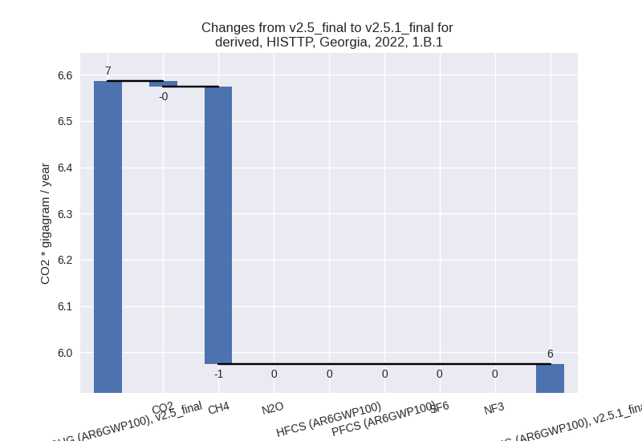
For 1990-2022 the changes per gas are:
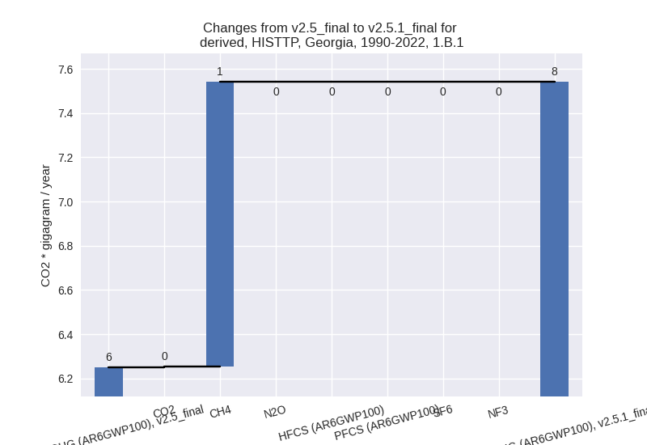
There is no subsector information available in PRIMAP-hist. - 1.B.2: Total sectoral emissions in 2022 are 88.03
Gg CO2 / year which is 1.0% of category 1 emissions. 2022 Emissions have
changed by -72.5% (-232.52 Gg CO2 /
year). 1990-2022 Emissions have changed by -73.8% (-235.96 Gg CO2 / year). For 2022
the changes per gas
are:
For 1990-2022 the changes per gas are:
There is no subsector information available in PRIMAP-hist.
- 1.A: Total sectoral emissions in 2022 are 8807.91
Gg CO2 / year which is 98.9% of category 1 emissions. 2022 Emissions
have changed by 16.1% (1220.33 Gg
CO2 / year). 1990-2022 Emissions have changed by 9.9% (675.90 Gg CO2 / year). For 2022 the
changes per gas
are:
- 2: Total sectoral emissions in 2022 are 3227.54 Gg
CO2 / year which is 20.4% of M.0.EL emissions. 2022 Emissions have
changed by -11.1% (-404.09 Gg CO2 /
year). 1990-2022 Emissions have changed by -8.3% (-173.08 Gg CO2 / year). For 2022
the changes per gas
are:
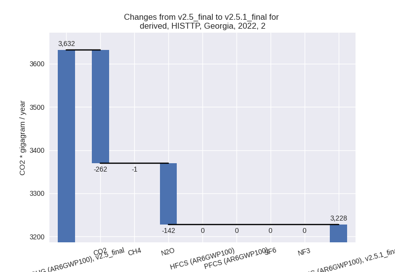
For 1990-2022 the changes per gas are: - M.AG: Total sectoral emissions in 2022 are 2055.69 Gg CO2 / year which is 13.0% of M.0.EL emissions. 2022 Emissions have changed by -1.9% (-39.14 Gg CO2 / year). 1990-2022 Emissions have changed by -0.3% (-8.03 Gg CO2 / year).
- 4: Total sectoral emissions in 2022 are 1590.09 Gg CO2 / year which is 10.0% of M.0.EL emissions. 2022 Emissions have changed by 0.7% (11.07 Gg CO2 / year). 1990-2022 Emissions have changed by 0.0% (0.34 Gg CO2 / year).
- 5: Total sectoral emissions in 2022 are 63.24 Gg
CO2 / year which is 0.4% of M.0.EL emissions. 2022 Emissions have
changed by -10.3% (-7.30 Gg CO2 /
year). 1990-2022 Emissions have changed by -0.1% (-0.22 Gg CO2 / year). For 2022 the
changes per gas
are:
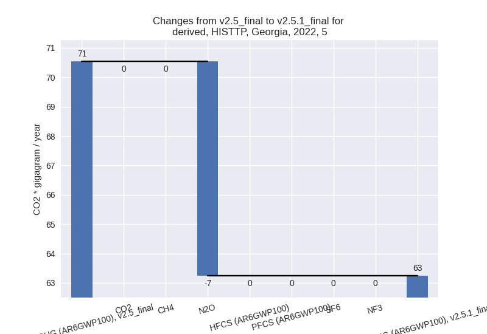